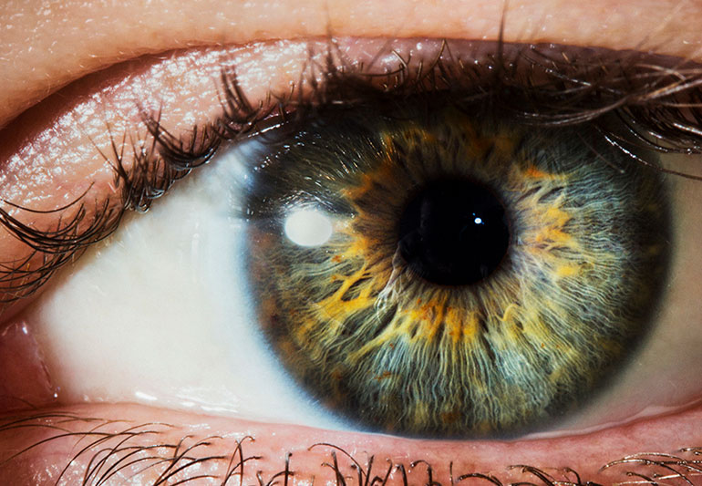

This is a simple project that displays my JavaScript, CSS, and DOM manipulation abilities. The user can create an infinite amount of pacmen and upon clicking start, the pacmen will bounce around the screen.

Eye Exercise
This project utilize mouse events to make two eyeballs on the page follow your cursor around the screen.
Map Exercise
Using MapBox, this project is essentially a recreation of google maps. Enter a starting location and destination and this project will provide concise directions.